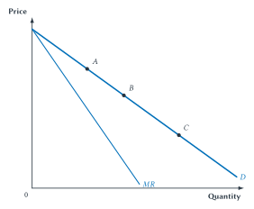
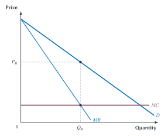
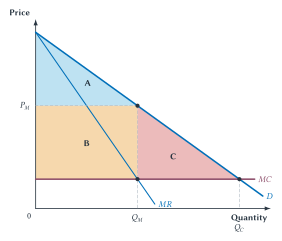
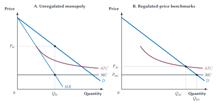
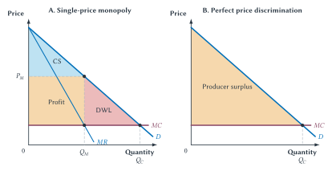

Chapter 15
Monopoly
A monopolist faces the market demand curve, searches among price-quantity choices, and restricts output when marginal revenue differs from price.

How many monopolies exist in Western New York?
The question sounds as if it should have a simple answer. Count the firms with only one seller. But one seller of what, and over what area?
National Grid owns and operates much of the local system of poles, wires, meters, and other equipment that delivers electricity to its customers in upstate New York. A second company does not string another complete set of wires down every street. For local electricity delivery, National Grid looks like a monopoly.
Yet customers may be able to choose a different company to supply the electricity that National Grid delivers. And electricity competes with natural gas for some uses. The answer changes when the market changes.
What about Apple? It is the only seller of the iPhone, but the iPhone competes with other smartphones. What about the only coffee shop near campus? It has no identical rival at that location, but students can buy coffee elsewhere, make it themselves, drink an energy beverage, or go without.
The hard part is rarely counting sellers. The hard part is identifying the choices buyers view as reasonable substitutes and explaining why rivals cannot enter.
A monopoly is a market with one seller, no close substitute for its product, and barriers that protect it from entry. The seller has market power: it can raise price without immediately losing every customer.
Market power changes the firm’s problem. A competitive firm takes price as given and chooses output. A monopolist faces the market demand curve. It can consider a higher price and fewer sales or a lower price and more sales. It searches among those price-quantity combinations for the one that produces the greatest economic profit.
That search has an important social consequence. A single-price monopolist normally produces less than a competitive market would produce. Some units for which buyers’ willingness to pay exceeds the cost of production are never made. Those lost gains from trade are the central welfare problem created by monopoly.
Quick Concept
Market Power
Market power is the ability to influence price rather than simply accepting the market price.
What Counts As A Monopoly?
The textbook definition is short. Applying it is not.
Quick Concept
Monopoly
A monopoly is a market with one seller, no close substitute, and a barrier that prevents entry from competing away the seller’s market power.
Each part matters. A single seller with many close substitutes may have little power over price. A seller with no close substitute may enjoy market power for only a short time if other firms can enter easily. And a firm may have market power even when it is not literally the only seller.
Market power is better understood as a matter of degree. At one end, a wheat farmer has almost no control over the market price. At the other, the only firm legally allowed to supply a needed product with no close substitute may have considerable control. Most real firms lie somewhere between those cases.
The Relevant Market
Before calling a firm a monopoly, define the relevant market. A relevant market has two parts:
- The product market identifies the goods or services buyers view as reasonable substitutes.
- The geographic market identifies the area in which buyers can realistically turn to other sellers.
Consider the only pharmacy in a small town. If the next pharmacy is five minutes away, the first pharmacy may face strong competition. If the next pharmacy is two hours away and customers need medication immediately, the geographic market may be much smaller and the local seller may have real market power.
The same logic applies to products. A firm can always define its product narrowly enough to appear unique. Apple is the only producer of the iPhone. Coca-Cola is the only producer of Coca-Cola. A neighborhood restaurant is the only seller of its exact meals in its exact building. That does not make each one a monopoly in a useful economic sense.
Common Mistake
One Brand Does Not Make A Monopoly
Every brand is unique in some way. The important question is whether buyers have close substitutes, not whether another firm sells the identical brand.
Chapter 5 introduced cross-price elasticity. It gives us a useful clue. If a rise in the price of one product causes buyers to switch strongly toward another, the products are substitutes and may belong in the same market. If buyers barely respond, the second product may not be a close substitute.
Cross-price elasticity does not settle every market-definition dispute. Substitution can differ across buyers, evidence can be incomplete, and the answer can depend on how large a price increase we have in mind. Still, it is usually more informative than simply counting firms.
Sideline
A Market Is Defined By Substitution
Products belong in the same economic market when buyers view them as reasonable substitutes. Cross-price elasticity helps reveal that relationship. An industry name or a unique brand does not settle it.
Sideline
How Many Monopolies Are There?
There is no trustworthy count until we say what the markets are. A broad definition can make a firm look small; an extremely narrow definition can make almost every brand look like a monopoly. Market definition is part of the economic analysis, not a label chosen after the fact.
Why Does Entry Not Occur?
Chapter 14 made a strong claim: positive economic profit attracts entry. If rivals can enter on comparable terms, they have an incentive to offer customers a better price or product. Entry expands the choices available to buyers and pushes economic profit downward.
Persistent monopoly power therefore requires an explanation. What prevents entry?
An entry barrier is an obstacle that protects an existing firm’s market power by making it difficult or impossible for rivals to compete on comparable terms.
| Possible barrier | The question to ask |
|---|---|
| Legal protection | Does a law, license, patent, or exclusive franchise prevent rivals from selling? |
| Control of a key input | Can an entrant obtain the land, network, data, resource, or distribution channel it needs? |
| Economies of scale | Would one firm have a large cost advantage because average cost falls across most of market demand? |
| Network effects or switching costs | Does an incumbent become more useful because many people already use it, or is changing suppliers costly? |
Table 15.1. Diagnose the barrier before diagnosing monopoly. A large firm, a high price, or a costly startup does not by itself identify the reason entry is weak.
Some barriers are deliberately created because they may produce a benefit. A patent gives an inventor a temporary legal right to exclude rivals, which can strengthen the incentive to fund research. Other barriers arise from technology. It would be enormously expensive for several firms to duplicate the same local water pipes or electricity lines.
Do not confuse a large startup cost with an entry barrier. A new hotel is expensive to build, but if entrants can obtain land, financing, workers, and permits on terms similar to existing hotels, the cost may limit the number of hotels without protecting any one of them from competition. The sharper question is whether the incumbent has an advantage that a capable entrant cannot reasonably match.
Quick Concept
Barrier To Entry
A barrier to entry protects an existing seller from competition. The important issue is not whether entry costs money. It is whether a rival can enter and compete on reasonably comparable terms.
National Grid: Finding The Monopoly
An electric bill helps show why market definition matters. In upstate New York, a customer may be able to choose an energy supplier. National Grid still delivers the electricity, maintains the local network, reads the meter, responds to outages, and restores service after storms.1
The strongest monopoly claim therefore does not cover every activity called “electricity.” It concerns the local distribution network. Building a second set of poles, wires, meters, and neighborhood connections would duplicate an enormous fixed investment. One local network can often deliver electricity at a lower total cost than several overlapping networks.
This does not imply that every National Grid activity is a monopoly, that every price it charges is justified, or that regulation is easy. It identifies the economic reason that ordinary entry may not work well for local distribution.
Case Study
Where Is National Grid’s Monopoly?
Do not begin with the company’s name. Separate the activities. Electricity generation can involve many producers. Energy supply may involve customer choice. Local delivery through a single system of poles and wires has the strongest natural-monopoly features. Good market analysis asks which activity lacks a practical substitute and why entry is difficult.
The Price Searcher
A competitive firm is a price taker. It can sell its small amount of output at the market price, so selling one more unit does not require the firm to lower the price on earlier units.
A monopolist faces the market demand curve. If it wants to sell more, it must accept a lower price. If it wants a higher price, it must accept fewer sales.
That makes price searcher a useful description. The monopolist searches among the price-quantity combinations on its demand curve for the one that produces the greatest economic profit.
The word searcher does not mean the firm can charge any price it wants. A price of $1,000 may produce no sales. The monopolist has discretion, but demand limits its choices. Every possible price comes with a quantity buyers are willing to purchase.
Quick Concept
Price Searcher
A price-searching firm chooses among price-quantity combinations on a downward-sloping demand curve. It has some control over price, but it cannot choose price and quantity independently.
Why Marginal Revenue Is Below Price
Suppose a monopolist can sell three units at $10 each. Total revenue is $30. To sell a fourth unit, it must lower the price to $9 for all four units. Total revenue becomes $36.
| Quantity | Price | Total revenue |
|---|---|---|
| 3 | $10 | $30 |
| 4 | $9 | $36 |
The fourth unit adds $9 of revenue by itself. But lowering the price from $10 to $9 also reduces revenue by $1 on each of the first three units. The firm gains $9 from selling the extra unit and loses $3 from the lower price on earlier sales. Marginal revenue is only $6.
| Part of the change | Effect on revenue |
|---|---|
| Sell one more unit at $9 | +$9 |
| Receive $1 less on each of the first three units | -$3 |
| Marginal revenue from moving from three to four units | +$6 |
Table 15.2. The quantity effect and the price effect. Selling another unit adds revenue, but the lower price reduces revenue on units the firm was already selling.
This gives us two parts of marginal revenue:
- The quantity effect is the added revenue from selling one more unit.
- The price effect is the revenue lost because the price must fall on earlier units.
For a single-price monopolist, marginal revenue is below price because the price effect is negative.
Key Point
One More Sale Has Two Effects
Selling another unit brings in revenue from that unit. But to make the sale, a monopolist usually must lower the price on units it was already selling. Marginal revenue equals the gain from the extra sale minus the revenue lost on earlier sales.
Figure 15.1 shows the result. The demand curve is the monopolist’s menu of possible price-quantity combinations. The marginal-revenue curve lies below it.
Figure 15.1. A monopolist’s demand and marginal revenue. Points A, B, and C are possible price-quantity combinations on demand. Marginal revenue lies below demand because selling another unit requires a price reduction that also lowers revenue on earlier units.
The important idea is why MR lies below demand,
not a geometric shortcut for drawing it.
Choosing Monopoly Output And Price
The monopolist wants to maximize economic profit. It uses the same marginal rule as every other firm: produce another unit when marginal revenue exceeds marginal cost, and do not produce a unit when its marginal cost exceeds its marginal revenue.
The rule is still:
\[ MR = MC. \]
What changes is that marginal revenue no longer equals price.
The graph must therefore be read in two steps:
- Find the quantity where
MR = MC. This is the profit-maximizing output, \(Q_M\). - Move up from \(Q_M\) to the demand curve. The height of demand gives the highest single price buyers will pay for that quantity, \(P_M\).

Figure 15.2. Choose quantity first, then price. The monopolist chooses \(Q_M\) by comparing marginal revenue with marginal cost. It then moves up to demand to find \(P_M\). Price is above marginal cost at the monopoly quantity.
Why not choose the point where demand crosses marginal cost? At that quantity, buyers’ willingness to pay for the next unit equals its cost. That is the competitive and efficient quantity studied in Chapter 6. But the monopolist cares about the revenue added by the next unit, not merely its price. Since marginal revenue is below price, the monopolist stops at a smaller quantity.
The monopolist stops not because the next unit costs too much to produce, but because selling it would require lowering the price on earlier units.
Use marginal revenue and marginal cost to choose quantity; use demand to choose price.
Does A Monopolist Always Earn Economic Profit?
No. Market power gives the firm a different pricing problem, but it does not guarantee low costs or strong demand.
Economic profit still equals total revenue minus total economic cost. On a graph, compare monopoly price with average total cost at \(Q_M\). If price exceeds average total cost, the firm earns positive economic profit. If price equals average total cost, economic profit is zero. If price is below average total cost, the firm suffers an economic loss.
A monopolist protected from entry can earn positive economic profit for a long time. It can also make mistakes, face weak demand, or have costs so high that it loses money. Monopoly and economic profit are related ideas, not synonyms.
Monopoly And Welfare
Chapter 6 gave us the welfare benchmark. Continue producing while buyers’ willingness to pay for the next unit exceeds the cost of producing it. Stop when value and cost become equal.
A competitive market reaches that quantity when price equals marginal cost. A single-price monopolist stops earlier because marginal revenue falls below price. Between \(Q_M\) and the competitive quantity \(Q_C\), demand remains above marginal cost. Buyers value those units more than they cost to produce, yet the transactions do not occur.
Those missing transactions create deadweight loss.

Figure 15.3. Monopoly transfers surplus and destroys some gains from trade. At monopoly price and quantity, area A is consumer surplus retained by buyers, area B is monopoly profit in this constant-cost example, and area C is deadweight loss. At the competitive quantity, total surplus would be A + B + C.
The High Price Is Not The Deadweight Loss
The monopoly price receives most of the attention, but the high price by itself is not the deadweight loss.
In Figure 15.3, area B moves from buyers to the monopolist. Buyers lose that surplus, and the firm gains it. This transfer can matter greatly for who receives income, but it is not lost from total surplus in the simple model.
Area C is different. No one receives it. It represents units between \(Q_M\) and \(Q_C\) for which willingness to pay exceeds marginal cost. Monopoly prevents those gains from trade from being created.
Key Point
Monopoly’s Deadweight Loss Comes From Too Little Output
A high monopoly price transfers surplus from buyers to the seller. Deadweight loss comes from the mutually beneficial units the monopolist does not sell.
This distinction will become especially clear when we study perfect price discrimination. A seller can charge extremely high prices to some buyers yet eliminate deadweight loss by expanding output to the efficient quantity. The distribution of surplus changes dramatically, but the missing-output problem disappears.
Does Market Power Require A Remedy?
Finding that price exceeds marginal cost is a reason to investigate, not an automatic instruction for government action.
First ask whether the market is defined sensibly, what prevents entry, and whether market power actually restricts output. Then ask whether the arrangement creates other benefits and whether a realistic remedy would improve the result. Patents may encourage research, scale may lower cost, and regulation or antitrust can create costs of their own.
Size and success alone do not show that intervention would improve the outcome. Market power raises questions about competition and public policy, but it does not settle them. Chapter 17 returns to antitrust when firms must also anticipate the behavior of important rivals.
The same caution applies to prominent technology firms. Apple and Nvidia may have substantial market power in particular products or uses, but neither fits every simple feature of a pure monopoly. The useful questions concern substitutes, entry barriers, innovation, contracts, and restricted output. A firm name is not a market definition, and a price above marginal cost is not by itself a complete policy case.
Key Point
Ask What Blocks Competition
Market power is common even though pure monopoly is rare. Before proposing a remedy, identify the relevant market, the entry barrier, the lost gains from trade, and the likely effects of the remedy.
Patents, Entry, And Generic Drugs
Few events show the force of entry as clearly as a prescription drug losing patent protection.
Developing a drug can require years of research, failed experiments, clinical trials, and regulatory review. Once a formula and production process exist, however, the cost of making another pill can be low compared with the protected price. A patent gives the innovating firm a temporary legal right to prevent other firms from copying the invention.
The patent creates a deliberate trade-off.
- During the patent period, the seller can charge above marginal cost and restrict output.
- The possibility of earning that return gives firms a stronger reason to fund risky research.
- When patent protection ends and generic producers enter, competition can push price much closer to production cost.
The patent system accepts some current market power in the hope of creating more future inventions. Eliminating the patent may make an existing drug cheaper today while weakening the reward for discovering the next drug. Extending protection makes the current access problem last longer.
Sideline
A $300 Drug Becomes A $3 Drug
The exact numbers differ across drugs, and the transition is not always immediate. Still, the stylized example captures a real economic force. When a protected price is far above the cost of producing another dose, generic entry can cause a dramatic price decline. The decline reveals both the earlier market power and the force of competition after entry.
U.S. Food and Drug Administration data show the pattern. Compared with the brand price before generic entry, the median price reduction was about 30 percent with one generic producer, 85 percent with five producers, and nearly 98 percent with ten or more.2 The estimates use invoice-based pharmacy acquisition prices, so they do not describe every rebate, insurance payment, or price paid by every patient.
One generic producer creates competition, but several producers usually create much more. This is Chapter 14’s entry logic in a setting where the legal barrier has expired: economic profit attracts producers, rivalry intensifies, and price moves toward cost.
The process is institutionally complicated. Generic firms must receive approval, manufacturing capacity takes time, some markets are too small to attract many sellers, and litigation or contracting can delay competition. The economic lesson survives those complications: the effect of a patent becomes easiest to see when the barrier ends.
Natural Monopoly
Some monopolies do not begin with legal protection. They arise because one firm can supply the entire market at a lower total cost than several firms could.
A natural monopoly exists when average total cost keeps falling across the amount the market demands. Large fixed costs are spread across more customers, while the marginal cost of serving one more customer may be low.
Local electricity distribution is a common example. Building the network of poles, wires, substations, meters, and control systems requires a large investment. Once that network is in place, delivering electricity to one more customer usually costs much less than building another complete network. Duplicating the fixed system may waste resources.
Large fixed costs alone do not prove natural monopoly. A stadium has a large fixed cost, but several stadiums can serve different events. A software company may have high development cost and low marginal cost, yet rivals can produce different software. The key condition is that one firm can serve the relevant market at a lower cost because average cost continues falling over that range of demand.
Quick Concept
Natural Monopoly
A natural monopoly exists when one firm can supply the relevant market at a lower total cost than multiple firms because average total cost falls across the quantity the market demands.
Natural monopoly creates a difficult choice. Ordinary competition may require wasteful duplication, but leaving one firm unregulated gives it an incentive to restrict output and charge the monopoly price.
Figure 15.4 compares three outcomes.

Figure 15.4. Regulating a natural monopoly involves trade-offs. An unregulated monopolist chooses \(Q_M\) and \(P_M\). Marginal-cost pricing produces the efficient quantity \(Q_{MC}\) but leaves price below average total cost. Average-cost pricing lets the firm cover cost, but output \(Q_{AC}\) remains below the marginal-cost quantity.
Three Pricing Choices
An unregulated natural monopolist uses the usual rule. It chooses output where marginal revenue equals marginal cost and then reads price from demand. The result is \(Q_M\) and \(P_M\).
A regulator could require marginal-cost pricing. Price would equal the cost of serving one more customer, and output would reach \(Q_{MC}\), the efficient quantity. But average total cost is above marginal cost. Revenue would not cover the large fixed cost, so the firm would suffer an economic loss. Keeping it in operation would require a subsidy or some other source of revenue.
A regulator could instead require average-cost pricing. The firm charges \(P_{AC}\) and produces \(Q_{AC}\), where price equals average total cost. The firm covers its economic cost, including a normal return. But price remains above marginal cost, and output remains below the efficient quantity.
There is no magic price that simultaneously produces the marginal-cost quantity, covers a higher average cost, and requires no outside funds. The cost structure creates the problem.
Regulation creates additional questions. Regulators need information about the firm’s costs. A regulated firm may have weak incentives to reduce cost if every approved expense can be passed to customers. Political pressure can distort decisions. A price that allows a reasonable return must distinguish real cost from waste without starving the network of investment.
Demsetz: Can Firms Compete For The Market?
Harold Demsetz challenged the usual move from natural monopoly to regulation. Even if it is cheapest to have only one firm in the market, firms might compete for the right to serve the market.3
Imagine a city inviting firms to bid for an exclusive garbage-collection or utility contract. Competition during the bidding stage may push the promised price toward cost even though only one firm provides the service afterward. One network does not automatically require one permanent, unchallenged company.
The limits are equally important. No contract can describe every future repair, quality choice, emergency, and needed investment. The city must monitor performance, handle requests to change the agreement, and remain able to replace the provider. Competition for the market works best when service can be described, performance can be measured, and replacement is credible.
Demsetz’s larger point is simple: natural monopoly identifies a cost problem; it does not automatically identify the best institution.
Price Discrimination
So far, the monopolist has charged every buyer the same price. Many firms try to do something more complicated.
Price discrimination occurs when a firm charges different buyers different prices for reasons based on willingness to pay rather than differences in the cost of serving them.
Airlines charge different fares for seats on the same flight. Movie theaters may charge different prices by age. Software companies offer student pricing. Colleges post one tuition but provide different aid packages. Coupons lower the price for buyers willing to spend time finding and using them.
A firm usually needs three conditions to discriminate successfully:
- It must have some market power. A price taker cannot charge selected buyers more than the market price.
- It must identify groups with different willingness to pay or design choices that cause buyers to sort themselves.
- Resale must be difficult. Otherwise, buyers who receive the low price can resell to buyers facing the high price.
Different Groups, Different Prices
Most price discrimination is much simpler than charging every buyer a different price. The firm separates customers into groups and charges each group a different price. Economists sometimes call this third-degree price discrimination, but the mechanism matters more than the name.
Consider a movie theater that charges a lower price to seniors than to other adults. Seniors may be more price-sensitive. They may have more flexibility about when to attend, more alternative uses of their time, or a greater willingness to skip the movie when the ticket price rises. Other adults attending on a particular evening may be less responsive to price.
Suppose the theater had to charge everyone the same price. A low price might attract more seniors, but the theater would also collect less from adults who would have paid the regular price. A high price would preserve the revenue from those adults, but many seniors might not buy tickets at all.
By charging a lower senior price and a higher regular price, the theater can keep the price higher for the less price-sensitive group while attracting more buyers from the more price-sensitive group. Age is easy to verify, and a discounted ticket cannot easily be resold to another customer.
The senior discount need not be generosity. It can be a profitable way to fill otherwise empty seats without cutting the price paid by less price-sensitive customers.
This also explains why eliminating the senior discount would not necessarily raise profit. The theater would not collect the higher price from every senior who currently attends. Some would stop buying tickets. If enough seniors respond that way, the higher price would reduce rather than increase revenue from the group.
The general pattern is straightforward: the group with less elastic demand is charged the higher price, while the group with more elastic demand is charged the lower price. The firm is responding to differences in buyers’ price sensitivity.
The numbering is simple. First-degree price discrimination is the perfect case discussed below, in which each buyer is charged that buyer’s willingness to pay. Second-degree price discrimination lets buyers sort themselves by choosing a quantity or version. A quantity discount is an example only when the lower price reflects buyer sorting rather than lower costs from making a larger sale. Third-degree price discrimination separates identifiable groups, as with senior movie prices. The names matter less than the pricing mechanisms.
A Price Difference Is Not Always Price Discrimination
Observed prices can differ because the cost of serving customers differs.
| Price difference | Main question |
|---|---|
| Senior discount at a movie theater | Are costs different, or is the theater separating buyers by willingness to pay? |
| Higher shipping charge to a remote location | Does delivery genuinely cost more? |
| Lower lunch price than dinner price | Is lunch demand weaker, or is scarce evening table capacity more costly? |
| Higher last-minute airline fare | Is the airline identifying less price-sensitive buyers, or have only costly seats and options remained? |
| Student software discount | Is the seller separating a low-willingness-to-pay group whose purchases can be verified and cannot easily be resold? |
Table 15.3. Diagnose the reason for the price difference. Price discrimination is based on differences in demand. Cost-based price differences are not price discrimination.
Lunch and dinner show why the distinction can be difficult. A restaurant may charge less at lunch because lunch customers are more price sensitive. That is a demand-side explanation. But a dinner table may also have a higher opportunity cost because the restaurant regularly fills and must turn customers away. That is a cost or capacity explanation. Both forces can operate at once.
Common Mistake
Different Prices Do Not Prove Price Discrimination
First ask whether serving the customers at different times, places, quantities, or quality levels costs different amounts. Price discrimination begins with demand-side differences after relevant cost differences are considered.
Perfect Price Discrimination
Under perfect price discrimination, the seller knows each buyer’s willingness to pay for each unit and charges exactly that amount.
This is an extreme benchmark, not a description of ordinary markets. It reveals the logic clearly.
With one price, the monopolist stops at \(Q_M\). Lowering price enough to sell another unit would force it to cut the price on earlier units. With a different price for each unit, that price effect disappears. The firm can sell the next unit without lowering what previous buyers paid.
The firm therefore continues selling until willingness to pay equals marginal cost, at \(Q_C\).

Figure 15.5. Perfect price discrimination changes both output and who receives the gains. A single-price monopoly restricts output to \(Q_M\) and creates deadweight loss. A perfectly discriminating seller expands output to \(Q_C\), eliminates deadweight loss, and captures all surplus that buyers would otherwise receive.
| Outcome | Single-price monopoly | Perfect price discrimination |
|---|---|---|
| Output | \(Q_M\), below the efficient quantity | \(Q_C\), the efficient quantity |
| Consumer surplus | Positive for some buyers | Zero |
| Producer surplus | Monopoly profit on units sold | All gains from trade |
| Deadweight loss | Positive | Zero in the benchmark |
Table 15.4. Perfect price discrimination separates efficiency from distribution. Output becomes efficient even though buyers receive none of the surplus.
This comparison drives home the chapter’s central welfare point. Monopoly deadweight loss comes from too little output, not simply from a high price. Perfect price discrimination can charge some buyers more than the single monopoly price and still eliminate deadweight loss because output expands.
Quick Concept
Perfect Price Discrimination
A perfectly discriminating seller charges each buyer that buyer’s willingness to pay. It produces the efficient quantity but transfers all gains from trade to the seller.
Does Real-World Price Discrimination Improve Welfare?
Real price discrimination is imperfect. Firms sort buyers into groups, offer coupons, set restrictions, or create different versions of a product. They do not know every buyer’s exact willingness to pay.
Its welfare effect depends heavily on output.
- If discrimination brings in buyers who would not purchase at the single price, output rises and deadweight loss can fall.
- If the firm mostly raises prices for buyers who were already purchasing, output may change little while surplus moves from buyers to the seller.
- Some buyers can gain from a low price while others lose from a high price.
- The system can require resources to design, monitor, and prevent resale.
The safest principles-level conclusion is not that price discrimination always helps or always harms. It is that price discrimination tends to improve total welfare when it expands output, but the result is not automatic.
Follow output before declaring a welfare result. If the pricing system serves additional buyers whose willingness to pay exceeds marginal cost, it creates gains from trade. If it merely changes prices among existing buyers, it mainly redistributes surplus between buyers and the seller. If it reduces output in some groups or requires costly enforcement, those effects can offset the gains.
Price discrimination is especially attractive in businesses with large fixed costs and low marginal costs. A movie, software platform, pharmaceutical formula, or college requires substantial resources to create and maintain, while serving one more user or student may cost much less than average cost. Charging every buyer marginal cost may not cover the fixed cost. Different prices can help fund the common investment while allowing additional buyers to participate.
That does not make every pricing rule desirable. It explains why cost structure matters. The same large-fixed-cost, low-marginal-cost pattern that complicated natural-monopoly regulation also creates a strong incentive to separate buyers by willingness to pay.
Common Mistake
Do Not Infer Welfare From A Price Gap Alone
Ask whether the pricing rule changes output. Expanding sales to buyers whose willingness to pay exceeds marginal cost creates gains from trade. Merely charging existing buyers different prices mainly changes who receives the surplus.
College Tuition: One Sticker Price, Many Net Prices
College tuition provides a familiar application. The sticker price is the published tuition and fee amount. The net price subtracts grants and scholarships. Two students at the same college can therefore face the same sticker price but pay very different net prices.
Only aid chosen by the college is part of the college’s pricing strategy. A government grant can lower what a student pays without changing the college’s price.
The difference can be large. At private nonprofit colleges in a 2025-26 NACUBO survey, the average institutional tuition discount for first-time full-time students was 57.1 percent.4 College Board estimates also show that average net tuition can move very differently from the posted price.5 Published tuition increases are real, but they can exaggerate the increase in the average effective tuition students pay.
The pricing logic is straightforward. Colleges offer differentiated products, face downward-sloping demand, have large fixed costs, and can prevent resale. A high sticker price combined with individualized aid allows a college to charge more to students who are less price-sensitive while using discounts to attract students who might enroll elsewhere. Research finds that colleges use institutional aid as part of enrollment and pricing strategy.6
Not every grant is simply price discrimination. Need, academic preparation, athletics, institutional goals, and government aid can all affect an award. Still, the basic mechanism is clear: a student who enrolls only because of a grant gains access at a lower price, while another student may pay more. To understand college prices, look at net tuition and enrollment, not the sticker price alone.
The Big Picture
Monopoly begins with three questions: Is there one seller? Do buyers lack close substitutes? What prevents entry?
Those questions keep the model connected to real markets. The only seller of an exact brand need not have much power. A firm with several rivals may still have substantial power if buyers cannot switch easily. A large fixed cost may explain why few firms operate without proving that an incumbent is protected from entry. Market definition and entry conditions do the hard work.
Once a firm faces a downward-sloping demand curve, its pricing problem changes. Selling another unit requires a lower price, and that lower price applies to earlier units as well. Marginal revenue therefore falls below price. The monopolist chooses output where marginal revenue equals marginal cost and then uses demand to find the price buyers will pay.
The resulting quantity is smaller than the competitive quantity. That restricted output, not the transfer caused by the high price alone, creates monopoly deadweight loss.
The model identifies the problem, but it does not automatically identify the remedy. Patents may restrict current competition while encouraging research. One utility network may cost less than several duplicate networks. Regulation may control price while weakening cost-cutting incentives. Franchise bidding may create competition for the market while leaving difficult contracts to enforce. Price discrimination can transfer surplus, but it can also expand output and help cover large fixed costs.
This is why monopoly is not merely a chapter about a firm drawing a marginal-revenue curve. It is a chapter about institutions. The economic goal is to understand what protects market power, which gains from trade are lost, and whether a realistic alternative would work better.
Study And Learn
Chapter Study Map
Core Ideas
- A monopoly has one seller, no close substitutes, and barriers to entry.
- Market power is a matter of degree and depends on how the relevant market is defined.
- Cross-price elasticity helps identify whether products are substitutes.
- An entry barrier protects an incumbent from effective competition; an ordinary startup cost does not necessarily do so.
- A price searcher chooses among combinations on its demand curve, not price and quantity independently.
- Marginal revenue is below price because selling another unit requires a lower price on earlier units.
- The monopolist first chooses output where
MR = MC, then reads price from demand. - A single-price monopolist restricts output below the competitive quantity.
- Monopoly deadweight loss comes from mutually beneficial units not produced.
- Market power raises a policy question, but it does not automatically justify a particular remedy.
- Natural monopoly creates a conflict between marginal-cost pricing and cost recovery.
- Price discrimination is based on demand-side differences after relevant cost differences are considered.
- Perfect price discrimination produces the efficient quantity while giving all surplus to the seller.
Figures And Tables
- Table 15.1: diagnose possible barriers to entry.
- Table 15.2: separate the positive quantity effect from the negative price effect.
- Figure 15.1: distinguish demand from marginal revenue.
- Figure 15.2: choose monopoly quantity first and then read price from demand.
- Figure 15.3: separate retained consumer surplus, monopoly profit, and deadweight loss.
- Figure 15.4: compare unregulated, marginal-cost, and average-cost pricing for a natural monopoly.
- Table 15.3: distinguish price discrimination from cost-based price differences.
- Figure 15.5 and Table 15.4: compare single-price monopoly with perfect price discrimination.
Reasoning Tasks
- Define the product and geographic market before counting sellers.
- Identify the close substitutes buyers can actually use.
- Explain what prevents entry instead of treating firm size as the barrier.
- Calculate marginal revenue from the change in total revenue.
- Narrate the quantity effect and price effect in words.
- Find \(Q_M\) from
MRandMC, then find \(P_M\) from demand. - Explain why the units between \(Q_M\) and \(Q_C\) would create gains from trade.
- Separate a transfer of surplus from a loss of total surplus.
- Compare an existing arrangement with realistic alternatives rather than an imaginary perfect solution.
- Diagnose whether a price difference comes from demand, cost, capacity, or several forces at once.
Common Mistakes
- Calling the only seller of an exact brand a monopoly without examining substitutes.
- Defining a market so narrowly that the desired conclusion becomes automatic.
- Treating every large startup expense as a barrier to entry.
- Saying a monopolist can charge any price it wants.
- Treating price and quantity as independent choices.
- Using demand instead of marginal revenue to choose monopoly output.
- Reading the monopoly price at the
MRandMCcrossing. - Saying monopoly always guarantees positive economic profit.
- Calling monopoly profit deadweight loss.
- Treating price above marginal cost as an automatic case for regulation or antitrust.
- Calling every price difference price discrimination.
- Assuming price discrimination always raises or always lowers total welfare.
Looking Ahead
Chapter 16 studies firms that have modest pricing power because their products are differentiated but entry remains relatively easy. Chapter 17 studies strategic interaction among a few important firms and develops the main antitrust discussion. Chapter 19 returns to market power, insurance, and pricing in health care.
Review Questions
- What three conditions define monopoly?
- What is market power?
- Why is market power better understood as a matter of degree?
- What are the product and geographic parts of a relevant market?
- Why does being the only seller of an exact brand not establish monopoly?
- How can cross-price elasticity help define a market?
- What is a barrier to entry?
- Why is an expensive startup not necessarily an entry barrier?
- Which part of National Grid’s electricity business has the strongest natural-monopoly features?
- What is a price searcher?
- Why can a monopolist not choose price and quantity independently?
- What are the quantity effect and price effect from selling another unit?
- Why is marginal revenue below price for a single-price monopolist?
- Describe the two steps used to find monopoly output and price.
- Why is the monopoly quantity below the competitive quantity?
- Does monopoly guarantee positive economic profit? Explain.
- Which area in Figure 15.3 is a transfer from buyers to the seller?
- Which area in Figure 15.3 is deadweight loss, and what does it represent?
- Why does a high monopoly price not by itself equal deadweight loss?
- What questions should be answered before recommending a remedy for market power?
- What trade-off does a patent create?
- Why can generic entry produce a large price decline?
- What cost condition defines a natural monopoly?
- Why can marginal-cost pricing cause a natural monopoly to lose money?
- What does average-cost pricing accomplish, and what does it give up?
- What did Demsetz mean by competition for the market?
- Why might an exclusive-franchise contract fail to settle every future issue?
- What conditions make price discrimination possible?
- Why are cost-based price differences not price discrimination?
- How does perfect price discrimination affect output, consumer surplus, producer surplus, and deadweight loss?
- Why is the welfare effect of imperfect price discrimination not automatic?
- How do sticker tuition and net tuition differ?
Economic Reasoning Questions
- A town has one grocery store, but most residents drive ten minutes to several larger stores. What additional facts would you need before calling the local store a monopoly?
- A company is the only seller of its patented medicine, and no other treatment is a close substitute. Identify the source of its market power and explain what should happen when effective generic entry occurs.
- A restaurant needs $2 million to open, but any qualified entrant can rent a location, buy equipment, hire workers, and compete on similar terms. Does the startup cost alone create an entry barrier? Explain.
- A monopolist sells 20 units for $15 each. To sell 21 units, it must lower the price to $14. Calculate total revenue at each quantity and the marginal revenue of the 21st unit. Separate the quantity effect from the price effect.
- A monopolist faces \(P = 20 - Q\), \(MR = 20 - 2Q\), and constant marginal cost of $4. Find the monopoly quantity and price. Find the quantity at which price equals marginal cost.
- In Question 5, explain in words why the units between the monopoly quantity and the competitive quantity are not produced even though buyers value them more than they cost.
- A monopolist’s price is $18, average total cost is $20, and output is 1,000 units. Is the firm earning monopoly profit? Calculate its economic profit or loss.
- In a constant-cost monopoly diagram, a policy lowers price but leaves output unchanged. What happens to consumer surplus, producer surplus, and total surplus in the simple model?
- A new rule forces a monopolist to expand output toward the quantity where demand meets marginal cost. Why can total surplus rise even if the monopolist earns less?
- A local water system has large fixed costs, low marginal cost, and falling average total cost throughout market demand. Explain why duplicating the network may be wasteful and why leaving one unregulated supplier can also be costly.
- A city awards an exclusive ten-year garbage-collection franchise to the lowest qualified bidder. Explain how competition can occur even though only one firm provides service. Name two problems the contract may not solve.
- A movie theater charges seniors less than other adults. What evidence would help determine whether the difference reflects price discrimination or a cost difference?
- A restaurant charges $14 for an entree at lunch and $22 at dinner. Give one demand-side explanation and one cost or capacity explanation for the difference.
- A software company has a large development cost and almost no cost from adding another user. Explain why student discounts might both raise the firm’s revenue and expand total gains from trade.
- A perfectly discriminating seller expands output from \(Q_M\) to \(Q_C\). Why does consumer surplus fall to zero while total surplus rises?
- A college raises sticker tuition by $5,000 and raises the average institutional grant by $4,500. Why would describing this as a $5,000 increase in the average price paid be misleading?
- A technology firm has a high gross margin. List four additional questions that should be investigated before concluding that antitrust action would improve welfare.
Optional Research And Discussion Questions
- Select a firm that is often called a monopoly. Define a plausible product market and geographic market, identify close substitutes, and explain the strongest barrier to entry. Then identify one fact that would weaken your conclusion.
- Use current FDA data to compare generic drug prices as the number of producers increases. Why is the number of approved competitors not always the same as the number actively supplying the market?
- Find the published tuition and net-price information for two colleges. Explain which differences could reflect need, competition for students, or price discrimination. Do not treat grant aid as proof of only one motive.
- A city must choose among an unregulated monopoly, rate regulation, public ownership, or bidding for an exclusive franchise. What information would be needed to compare the arrangements honestly?
Source Notes
National Grid, “Energy Choice” and “Energy Supplier List”; New York State Department of Public Service, “Retail Access Application - General Information”. These sources distinguish competitive energy supply from National Grid’s continuing delivery and outage responsibilities. Program details can change and should be refreshed before publication.↩︎
U.S. Food and Drug Administration, Generic Competition and Drug Prices: New Evidence Linking Greater Generic Competition and Lower Generic Drug Prices, 2019, Table 2. The chapter uses the report’s invoice-based median ratios of generic pharmacy acquisition price to the brand price before entry. The rounded reductions are about 30.4 percent with one producer, 43.8 percent with two, 73.2 percent with four, 84.8 percent with five, and 97.8 percent with ten or more. These are median market-level comparisons, not patient out-of-pocket prices.↩︎
Harold Demsetz, “Why Regulate Utilities?”, Journal of Law and Economics 11, no. 1 (1968): 55-65. Demsetz separates the number of firms bidding before a contract from the number producing after the award. The chapter adds durability, monitoring, uncertainty, renegotiation, and incomplete contracts when evaluating the proposal.↩︎
National Association of College and University Business Officers, “Most Undergraduates Receive Grants at Private Colleges, NACUBO Research Shows”, 2026. The estimated 2025-26 discount rates come from 258 participating private nonprofit colleges and are not national estimates for all institutions.↩︎
College Board, “Trends in College Pricing: Highlights” and Trends in College Pricing and Student Aid 2025. The net-tuition series covers first-time full-time students and subtracts average grant aid from tuition and fees. It is not total net cost of attendance and does not describe every student.↩︎
Ian Fillmore, “Price Discrimination and Public Policy in the U.S. College Market”, Review of Economic Studies 90, no. 3 (2023): 1228-1264; Emily E. Cook and Sarah Turner, “Progressivity of Pricing at U.S. Public Universities”, Economics of Education Review 88 (2022): 102239. Fillmore uses a structural model and 2008 student data; Cook and Turner study first-time full-time students receiving Title IV aid. Neither paper implies that every scholarship has a single motive.↩︎